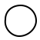

Coding Fundamentals
This is a set of core katas that will prepare students for any ThoughtSTEM class. They are designed to give students a strong foundation in computer science and computational thinking.
Note that unlike many of our classes, these katas are not particularly "flashy". They don’t involve games, or robots, or virtual reality.
On the other hand, they are designed to strengthen skills that will help students excel in any domain – whether it’s games, or robotics, or virtual reality, or anything else really.
These katas are intended to be a fun, enjoyable, visually appealing way of strengthening computational problem solving skills.
Kata key:
 - Meta Katas - for skills related to excelling at katas.
 - Shape Katas - for skills related to basic shapes.
- Shape Katas - for skills related to basic shapes.
 - Combo Katas - for skills related to building combination shapes.
- Combo Katas - for skills related to building combination shapes.
 - House Project Katas - for skills related to building more complex combination shapes.
- House Project Katas - for skills related to building more complex combination shapes.
1 Meta Katas
Core Values Kata (1 minute.)
Hand motions can make these easier to remember and repeat. For example: ’It’s not about my code.’ Point to computer. ’It’s about what I can code.’ Point to brain."
Teaching Tip: Depending on the size of your class, you may want to challenge them to rattle these off 1 by 1, in pairs or small groups, or as an entire class.
Can recite the first two ThoughtSTEM core values
It’s not about my code. It’s about what I can code.
It’s not about me. It’s about my team.
2 Shape Katas
 Bronze Shape Kata or Red Circle Kata (5 minutes)
Bronze Shape Kata or Red Circle Kata (5 minutes)
Teaching Tip: Start with all the code projected/written on the board. Remove the lines one by one, testing the students each time.
Within five minutes, the student can create a red circle.
Like so:
#lang racket (require 2htdp/image) (circle 80 'solid 'red)
 Silver Shape Kata or Any Shape Kata (5 minutes)
Silver Shape Kata or Any Shape Kata (5 minutes)
Teaching Tip: Don’t give any example code for this badge. Have students extrapolate from circle code.
Within five minutes, the student can translate a sentence of this type:
Make a gold star that is 30 pixels.
To code of this type:
#lang racket (require 2htdp/image) (star 30 'solid 'gold)
This badge should ONLY be earned after student has built multiple shapes.
triangle
square
rectangle *note: needs 2 number arguments
ellipse *note: needs 2 number arguments
 Gold Shape Kata or Break-It Shape Kata (5 minutes)
Gold Shape Kata or Break-It Shape Kata (5 minutes)
Within five minutes, the student can code a shape with a color that doesn’t work.
NOTE: The code must still run, but the shape should appear black.
For example:
#lang racket (require 2htdp/image) (square 30 'solid 'puce)
 Platnium Shape Kata or Not-Solid Kata
Platnium Shape Kata or Not-Solid Kata
Challenge the students to find the 1 other option that is the opposite of 'solid and code a shape featuring it.
Teaching Tip: Put your students into teams to figure this one out. Encourage super secrecy in order not to give away the answer to other teams!
An example:
#lang racket (require 2htdp/image) (triangle 50 'outline 'purple)
3 Combo Katas
Teaching Tip: Take time to review the ThoughtSTEM Core Values at the top of each class for the first several weeks.
 Bronze Combo Kata or Beside Kata (5 minutes)
Bronze Combo Kata or Beside Kata (5 minutes)
Teaching Tip: Test their previous knowledge and have the students create two shapes before you show them how to beside.
Within five minutes, the student can translate a sentence of this type:
Place two red circles beside eachother.
To code of this type:
#lang racket (require 2htdp/image) (beside (circle 20 'solid 'red) (circle 20 'solid 'red))
 Silver Combo Kata or Above Kata (5 minutes)
Silver Combo Kata or Above Kata (5 minutes)
Within five minutes, the student can translate a sentence of this type:
Place two different sized triangles above one another.
Teaching Tip: Have students figure out how an above is different than just coding two shapes in a row. (one image, centered, connected)
To code of this type:
#lang racket (require 2htdp/image) (above (triangle 50 'solid 'blue) (triangle 80 'solid 'purple))
 Gold Combo Kata or Overlay Kata (5 minutes)
Gold Combo Kata or Overlay Kata (5 minutes)
Within five minutes, the student can translate a sentence of this type:
Overlay one square on top of a larger square of a different color.
Remember: order of the shapes is important!
To code of this type:
#lang racket (require 2htdp/image) (overlay (square 50 'solid 'blue) (square 80 'solid 'purple))
4 House Project Katas
 Bronze House Project Kata or House Kata (5 minutes)
Bronze House Project Kata or House Kata (5 minutes)
Within five minutes, the student can build a simple house picture.
For example:
#lang racket (require 2htdp/image) (above (triangle 100 'solid 'aqua) (square 100 'solid 'blue))
 Silver House Project Kata or Tree Kata (5 minutes)
Silver House Project Kata or Tree Kata (5 minutes)
Within five minutes, the student can build a simple tree picture.
Example complete code:
#lang racket (require 2htdp/image) (above (circle 30 'solid 'green) (rectangle 20 80 'solid 'brown))
 Gold House Project Kata or House Plus Kata (10 minutes)
Gold House Project Kata or House Plus Kata (10 minutes)
Within ten minutes, the student can build a simple house picture, adding a door.
Teaching Tip: Spend some time messing around with overlay/align. Options for the first parameter, "middle", also include "right" and "left." "bottom" can also be "middle" or "top"
Example complete code:
#lang racket (require 2htdp/image) (above (triangle 100 'solid 'aqua) (overlay/align "middle" "bottom" (rectangle 30 50 'solid 'brown) (square 100 'solid 'blue)))
 Platnium House Project Kata or Whole House Kata (10 minutes)
Platnium House Project Kata or Whole House Kata (10 minutes)
Within ten minutes, the student can build a house with a door beside
Teaching Tip: You may want to start with the complete code from the last kata, then add the new code (focusing on relationships and parentheses), before you start building it all from scratch.
Example complete code:
#lang racket (require 2htdp/image) (beside/align "bottom" (above (triangle 100 'solid 'aqua) (overlay/align "middle" "bottom" (rectangle 30 50 'solid 'brown) (square 100 'solid 'blue))) (above (circle 30 'solid 'green) (rectangle 20 80 'solid 'brown)))